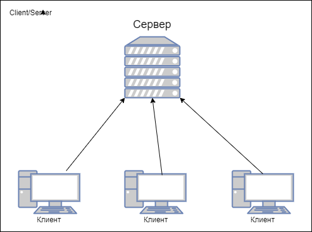
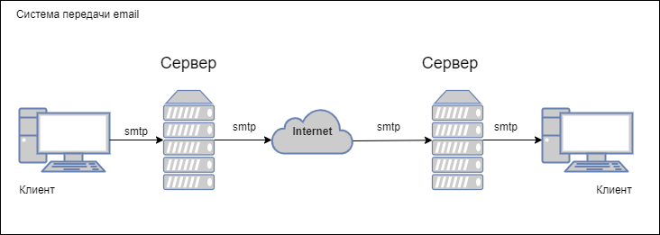
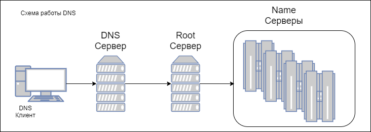

В этом разделе приведен высокоуровневый обзор архитектурных шаблонов клиент-сервер. Мы начинаем с двухуровневых моделей клиент-сервер и увидим как ограничения двухуровневых моделей клиент-сервер привели к разработке трехуровневых и затем n-уровневых моделей клиент-сервер. Также кратко рассмотрим такие вариации клиент-серверной модели как master-slave, peer-to-peer с примерами использования. Завтем мы рассмотрим типовые фреймворки веб-приложений. Требования к веб-приложениям отличаются от требований к классическим клиент-серверным приложениям, и ключевым отличительным фактором является динамическое обновление пользовательского интерфейса на основе изменений в базе данных. Мы постараемся рассмотреть наиболее популярные шаблоны, используемые при разработке веб-приложений
Основные темы этой части
Модель клиент сервер это один из старейших архитектурных шаблонов. Он описывает коммуникацию двух разных частей, клиентской и серверной
Клиент и сервер обычно составляют распределенную систему и взаимодействуют используя коммуникационную сеть
Не существует принципиального ограничения количества клиентов, которые могут обслуживаться одним сервером. Также не обязательно, чтобы клиент и сервер находились в разных системах. Связь между клиентом и сервером осуществляется путем обмена сообщениями по схеме "запрос-ответ". Клиент отправляет запрос на обслуживание, а сервер возвращает ответ. Эта схема взаимодействия "запрос-ответ" является примером межпроцессного взаимодействия. Для эффективного взаимодействия необходимо иметь четко определенный протокол связи, устанавливающий правила взаимодействия, такие как формат сообщений, правила обработки ошибок и так далее. Все коммуникационные протоколы, используемые для взаимодействия клиент-сервер, работают на прикладном уровне стека протоколов. Для дальнейшей оптимизации в процессе взаимодействия клиент-сервер сервер иногда реализует специальные интерфейсы прикладного программирования (API), которые могут быть использованы клиентом для доступа к какой-либо конкретной услуге с сервера. Шаблон клиент-сервер, изображенный на рисунке, имеет два уровня: клиентский и серверный, и поэтому его также называют двухуровневым шаблоном или двухуровневой системой клиент-сервер
Термин "сервис", используемый в контексте клиент-серверной архитектуры, относится к абстракции ресурса. Ресурс может быть любого типа, а имя сервера определяется на основе ресурса, который предоставляется сервером (сервис). Например, если сервер предоставляет веб -страницы, он называется веб-сервером, а если сервер предоставляет файлы, он называется файловым сервером и т.д. Сервер может получать запросы от множества клиентов в любой момент времени. Но любой физический сервер имеет ограничения возможностей обработки потока сообщений. Поэтому часто сервер должен определять приоритет входящих запросов и обслуживать их в соответствии с их приоритетом. Система планирования, используемая на сервере, помогает серверу в распределении приоритетов. Ниже приведены общие области применения шаблонов клиент-сервер для различных случаев использования.
Email сервер и email коиент: Сервер отправляет письма в ответ на запрос с клиента. Примеры - Microsoft Exchange от Microsoft, Gmail от Google И другие. Работу такой почтовой системы можно описать так:
Когда вы отправляете письмо, приложение почтового клиента связывается с почтовым сервером по протоколу SMTP и загружает содержимое на сервер. Когда оно загружено, почтовая система доставляет письмо на другой сервер, который использует протокол POP3 для обслуживания клиентского ПО доставляющего письмо адресату. Подробное описание этого процесса это не тема этого документа, но если тема заинтересовала - можно почитать статью.
DNS - одна из самых важных служб, существующих в Интернете. В Интернете есть огромное количество устройств, и каждое из этих устройств называется хостом. Каждый хост может быть принтером, маршрутизатором, компьютером или любым другим устройством. Каждый хост имеет уникальный адрес, называемый IP-адресом. Помимо IP-адреса, с каждым хостом также связано уникальное имя хоста. Например, если имя хоста равно LP231 и он присутствует в домене acme.com, то полное доменное имя (FQDN) хоста равно LP231.acme.com. Полное доменное имя используется для уникальной идентификации хоста в пространстве имен DNS. Пространство имен DNS содержит несколько часто используемых суффиксов имен, например:
Система DNS работает с использованием концепции распределенных баз данных, основанной на модели клиент-сервер. DNS-клиенты - это объекты, которым требуется разрешение имен (сопоставление имен хостов с IP -адресами). DNS-серверы поддерживают данные, необходимые для разрешения имен. Высокоуровневая схема архитектуры DNS клиент-сервер приведена на следующей диаграмме:
Предположим, что URL-адрес www.acme.com введен в браузере DNS-клиента. Браузер подключается к DNS-серверу, чтобы получить IP-адрес соответствующий доменному имени. DNS-сервер выполняет эту задачу, сначала подключаясь к одному из корневых (root) DNS-серверов. Корневые серверы хранят IP-адреса всех DNS-серверов, которые обрабатывают домены верхнего уровня, такие как .edu, .com и так далее. В этом примере корневой сервер, получив IP-адрес домена верхнего уровня .com, отправляет ему запрос, запрашивающий IP-адрес www.acme.com. DNS сервер, который обрабатывает .домен com вернет IP-адрес сервера имен который отвечает за домен www.acme.com
Затем сервер имен отправляет запрос на DNS-сервер www.acmе.com. Этот DNS-сервер передает полный IP-адрес серверу имен, который, в свою очередь, отправляет его обратно клиенту DNS, который инициировал запрос DNS. Затем компьютер-клиент DNS может использовать IP-адрес для доступа к требуемой веб-странице